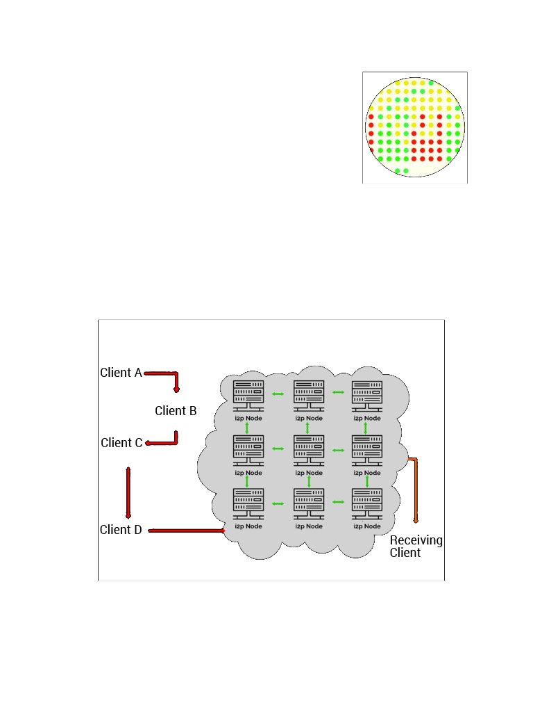
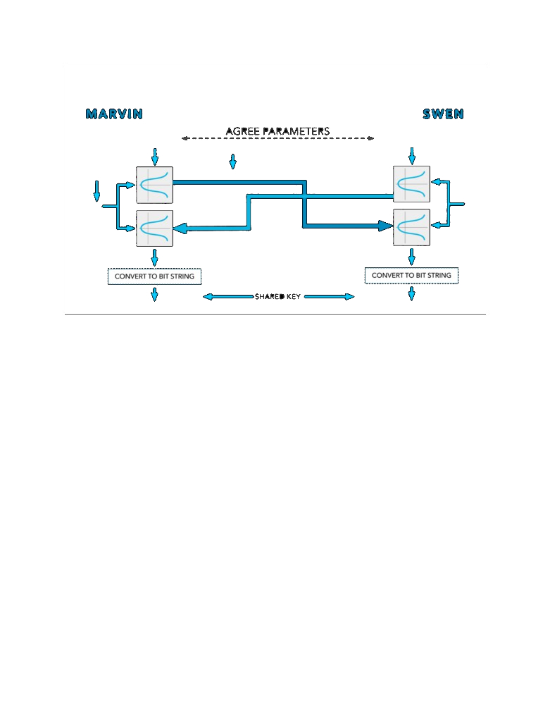
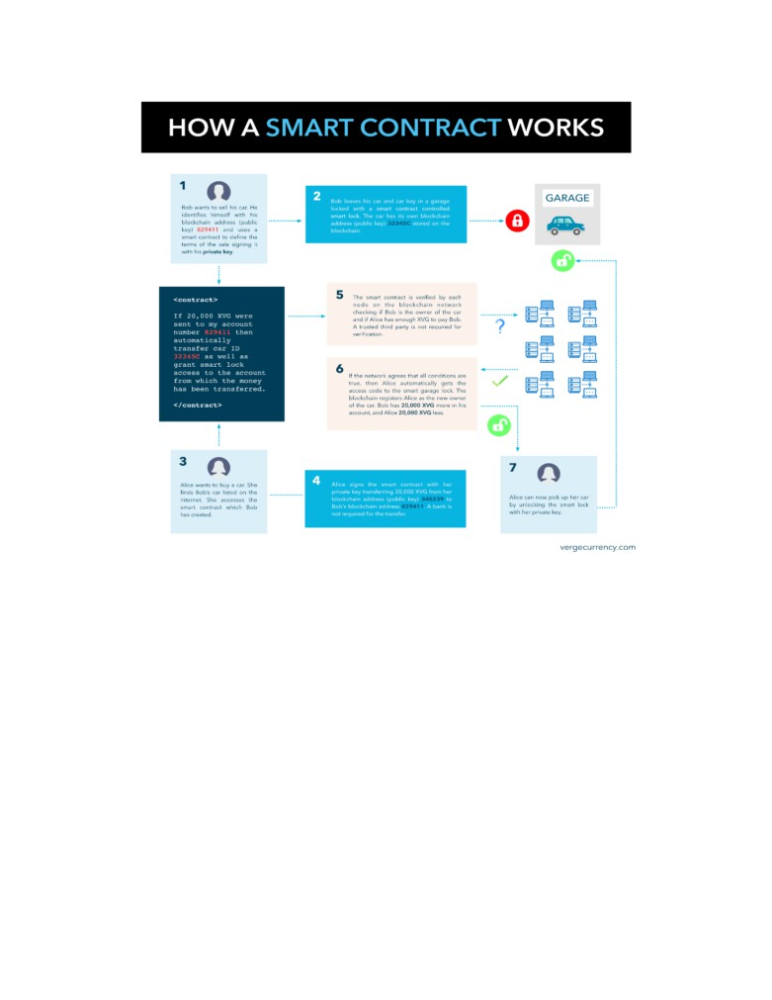

Introduction
Since its inception in 2009, Bitcoin [1] and the concept of a blockchain, was
developed in response to an inherent flaw in the way transactions were
processed on the Internet. In his whitepaper [2], Nakamoto explains that
Commerce on the Internet has come to rely almost exclusively on
financial institutions serving as trusted third parties to process
electronic payments. While the system works well enough for most
transactions, it still suffers from the inherent weaknesses of the trust
based model (Nakamoto, 2007)
Bitcoin has been rapidly adopted into today’s modern marketplaces͘ primary
issue with Bitcoin’s rapid adoption is the increase of demand on the original
blockchain to handle varying degrees of large transactions. With increased
demand comes increased transactional waiting periods, and this has resulted in
higher transactional fees in attempts to try and speed-up transaction
confirmation times.
Official Omicron Whitepaper
2
Table of contents
Introduction
2
1.0 Overview
4
1.1 Multi-Algo PoW
4
1.2 Tailored transactional applications
4
1.3 Simple transactions
4
1.4 Stealth transactions
5
1.5 Anon transactions
5
2.0 The Omicron Network
6
2.1 TOR Integration
6
2.2 I2P Integration
7
2.3 Electrum
7
2.4 TOR Android
9
3.0 Encrypted Messaging
10
3.1 Message Propagation
11
4.0 Dual-Key Stealth Addressing
12
4.1 Dual-Key Stealth Address Protocol
13
4.2 Key Agreements
14
4.3 The Diffie-Hellman algorithm
14
4.4 Elliptic-Curve Diffie-Hellman (ECDH)
15
4.5 Key Take-aways
17
Atomic swaps
18
5.1 What is a Hash Time-Locked Contract (HTLC)?
18
5.2 How do Hash Time-Locked Contracts work?
18
5.3 What are the benefits of HTLC’s?
19
5.4 What are the benefits of Atomic swaps?
19
5.5 What are the limitations of on-chain Atomic swaps?
19
5.6 What is the Lightning Network?
19
6.0 Rootstock (RSK)
21
7.0 Ring confidential transactions
24
7.1 Ring Signatures
25
7.2 Pendersen Commitment
25
7.3 Range Proofs
26
Conclusion
26
References
28
Personal Note
30
Official Omicron Whitepaper
3
1.0 Overview
The core innovation behind Bitcoin is its decentralized structure. Unlike traditional fiat currencies,
Bitcoin has no central control, no central repository of information, no central management, and no
central point of failure. To this point, Omicron was created to bring tailored transactional applications and
inherent privacy implementations to strengthen user obfuscation while maintaining Nakamoto’s vision
of a decentralized electronic payment system based on cryptographic proof instead of third-party trust.
1.1 Multi-Algo PoW
Omicron is a multi-algorithm enabled proof-of-work based cryptocurrency that is designed to enable people with different
types of mining devices to have equal access to earning coins. It is one of the few cryptocurrencies to support 5 hash
functions combined on one blockchain. This results in increased security due to a wider range of people and devices that
can mine Omicron. The 5 algorithms supported on the Omicron network are: Scrypt, X17, Lyra2rev2, myr-groestl and blake2s.
All 5 algorithms have a 30-second block target time and the difficulty is influenced only by the algorithms hash rate.
1.2 Tailored transactional applications
Omicron (OMI) was originally created based on the idea of providing end-user identity obfuscation suited for everyday use.
We believe that every human deserves the right to privacy and with that idea in mind we pride ourselves on being able
to provide several different available methods of transacting across the Omicron network. Each method provides our users
with a base level of obfuscation through the TOR network as well as different obfuscation options tailored for everyone’s
specific needs.
1.3 Simple transactions
Much like Bitcoin, the Omicron network operates on a publicly facing blockchain. It is important to understand that all
transactions are stored publicly and permanently on the blockchain. This means that anyone can see the balance and
transactions of any Omicron address. However, Omicron addresses are not themselves linked to a person or entity and users
remain pseudo-anonymous so long as different addresses are used per transaction and or until information is revealed
during a purchase or other transactional circumstance [REF]. These styles of transactions are best suited for general
everyday use.
Official Omicron Whitepaper
4
1.4 Stealth transactions
Stealth transactions are primarily compromised of dual-key stealth addresses. As you will read later in this paper, stealth
addresses are a method by which additional obfuscation can be implemented to further protect the receiving party
when transacting with Omicron. This is done by requiring the payers to generate random one-time addresses for a given
transaction. When multiple users send funds to a stealth address, rather than these transactions appearing on the
blockchain as multiple payments to the same address, they instead appear as multiple payments going to different
addresses. This (in theory) makes it near-impossible to link transactions to the recipient’s published address or one-time
generated addresses.
It is important to note that this type of transaction is designed such that the recipient of a payment can maintain their
privacy, Stealth addresses do not provide 100% anonymity and do not protect the sender.
1.5 Anon transactions
Anon transactions use a combination of dual-key stealth addresses and RingCT (Ring Signatures and confidential
transactions) to preserve the anonymity of both the sending and receiving parties. These concepts will be explained later
in this paper; however, the short version is that Ring Signatures make it harder to trace transactions by obscuring the
output of the true sender in a set of other outputs on the blockchain, confidential transactions hide the actual amounts
being sent, and TOR hides both parties true IP addresses i.e. IP obfuscation.
This style of transaction is best suited for those who are fully looking to maintain their personal privacy.
Official Omicron Whitepaper
5
2.0 The Omicron Network
The following segments are to discuss key integrations that are supported on the Omicron network.
2.1 TOR Integration
TOR [16], derived from an acronym for the original software project name “The Onion Router”, is an IP
obfuscation service which enables anonymous communication across a layered circuit-based network.
TOR directs internet traffic through a free worldwide volunteer overlay
network consisting of more than seven thousand relays to conceal a
user’s location and usage from anyone conducting network surveillance
or traffic analysis.
The layers of encrypted address information used to anonymize data packets sent
through TOR are reminiscent of an onion, hence the name. That way, a data packet's
path through the TOR network cannot be fully traced. TOR's use is intended to protect the personal privacy of users, as
well as their freedom and ability to conduct confidential communication by keeping their Internet activities from being
monitored.
Onion routing is implemented by encryption in the application layer of a communication protocol stack, nested like the
layers of an onion. TOR encrypts the data, including the next node destination IP, multiple times and sends it through a
virtual circuit comprising successive, randomly selected TOR relays. Each relay decrypts only enough of the data packet
wrapper to know which relay the data came from, and which relay to send it to next. The relay then rewraps the package
in a new wrapper and sends it on. The Final relay decrypts the innermost layer of encryption and sends the original data
to its destination without revealing, or even knowing, the source IP address.
In short, when a user connects into the TOR network, their internet traffic is then routed through a number of global
servers, each of which removes information of the previous server such that the last exit node server ends up being
clueless as to where the network originated from.
Official Omicron Whitepaper
6

2.2 I2P Integration
I2P [10, 11] was originally built to provide hidden services which allow
people to host servers at unknown locations. I2P provides many of the
same benefits that TOR does. Both allow anonymous access to online
content, make use of a P2P-style routing structure, and both operate
using layered encryption.
However, I2P was designed to be a “network within the internet”, (see figure 1.1)
with traffic staying contained in its borders. I2P performs packet-based routing as opposed to TOR’s circuit-based
routing. This provides the benefit of permitting I2P to dynamically route around congestion and service interruptions in a
manner like the internet’s IP routing͘ This provides a higher level of reliability and redundancy to the network itself͘
The first time a client wants to contact another client, they make a query against the fully distributed "network
database" - a custom structured distributed hash table (DHT) based off the Kademlia algorithm. This is done to find the
other client's inbound tunnels efficiently, but subsequent data between them usually includes that information so no
further network database lookups are required.
2.3 Electrum
Official Omicron Whitepaper
7
Electrum's [21] strength is speed and simplicity, with low resource usage. It uses secure remote servers
that handle the most complicated parts of the Omicron network and allows
users to recover their wallets with a secret seed phrase.
Additionally, Electrum offers a simple and easy to use cold storage solution. This allows
users to store all, or part of their coins, in an offline manner. Moreover, Electrum is one
of the only wallets to provide native TOR and I2P support. By integrating Electrum with
TOR and I2P, one can achieve anonymity while using the desktop/mobile wallet. Both IP
address and transaction information is secured and does not leak to the connecting
servers; increasing user privacy.
Electrum enables multi-signature support, which requires more than one key to authorize an Electrum transaction.
Standard transactions on the Omicron network could be called Single-signature transactions, because transfers require only
one signature - from the owner of the private key associated with the Omicron address. An Electrum transaction, with
multi-signature support, requires the signatures of multiple people before the coins can be transferred. Omicron then
requires multiple different party addresses to be provided to do anything with them.
One Electrum wallet is on your primary computer, the other on your
smart phone - the coins cannot be spent without a signature from both
devices. Thus, an attacker must gain access to both devices to steal your
coins.
Official Omicron Whitepaper
8
2.4 TOR Android
The Omicron TOR [16, 10] wallet was designed to bring IP obfuscation
services to your personal mobile devices when transacting with Omicron. This
wallet, by default, does not have the ability to connect to or broadcast user
information over Clearnet which helps to ensure that no user data is
unintentionally leaked.
All transactions are completed over TOR via Simple Payment Verification (SPV). SPV is a technique described in Satoshi
Nakamoto’s paper that allows for the wallet to verify transactions through proof of inclusion; a method for verifying if a
transaction is included in a block without downloading the entire block (similar to how an Electrum wallet functions).
SPV allows for nearly instant payment confirmations because it acts as a thin client that only needs to download the
block headers, which are drastically smaller than full blocks. The Omicron TOR wallet also houses standard security features
such as a 4-digit pin code and biometric locking options for an added layer of physical security.
Additionally, the Omicron TOR wallet can handle P2P QR code scan transactions with instant verification. Clients can also
import QR codes from paper wallets to pull balances from cold storage if required.
Official Omicron Whitepaper
9
3.0 Encrypted Messaging
Encrypted messaging is a P2P (peer-to-Peer) Instant messaging system utilizing state-of-the-art
encryption technology to keep your communications private. All messages are encrypted by the proven
AES-256-CBC algorithm, and distributed between nodes in such a way as to prevent the recipients of
messages from being inferred by assailants utilizing sophisticated traffic analysis.
Encrypted messaging utilizes the elliptic curve digital Signature algorithm, which is a variant of the digital signature
algorithm used in elliptic curve cryptography. ECDSA is used to give you the confidence of knowing messages you receive
come from the original recipient and remain untouched in propagation.
As with stealth address transactions, the Elliptic Curve Diffie-Hellman key exchange method allows a secret key for
encryption to be shared between the sender and the recipient using the data embedded in the message along with the
private keys of Omicron dual-key stealth addresses held by the sender and recipient, thus allowing for the distribution of
messages of whom nobody knows the recipient of. In order to send an encrypted message, much like sending Omicron, you
must possess the public key of the intended recipient.
Omicron uses curve secp256k1[27] for all elliptic curve functions. This is the same curve used by Bitcoin along with most
altcoins. With such widespread use and underpinning systems of immense value, it is extremely unlikely that curve
secp256k1 is not secure. Messages are signed by the keys they were sent with. This allows you to be confident of the
origin of the messages you receive and allows the public key of the sender to be extracted from the message, providing
you all the information needed to send a reply.
Additionally, our implementation of encrypted messaging takes full advantage of both LZ4 and xxHash algorithms. LZ4 is
a lossless data compression algorithm that is focused on compression and decompression speed while simultaneously
utilizing very little compute resource. LZ4 is the primary compression algorithm used in many modern-day applications
such as ZFS on Linux, FreeBSD, Illumos, and many others which can be found here. xxHash is an extremely fast non-
cryptographic hashing algorithm with working speeds close to RAM limitations. Combining xxhash with LZ4 compression
enables the Omicron network to very quickly send and receive messages over the blockchain with very limited impact on
compute & network resources.
Official Omicron Whitepaper
10
3.1 Message Propagation
Encrypted Messages are duplicated on every participating node in the Omicron network - this prevents adversaries form
uncovering the recipient of an encrypted message by using network traffic analysis.
The messages are stored on each node for a maximum period of 48 hours, after which the message is deleted. If the
recipient is absent from the network for 48 hours or more the possibility exists that they may not receive messages sent
to them. It is recommended to connect to the network each day in order to prevent such an occurrence.
Stored messages are grouped by time in divisions of 1 hour. The system operates on the grouped buckets of messages to
save bandwidth.
Official Omicron Whitepaper
11
4.0 Dual-Key Stealth Addressing
Stealth Addressing allows senders to create an unlimited number of one-
time destinations addresses on behalf of the recipient without any
interaction between the parties. Stealth addresses are a method by which
additional obfuscation can be implemented to further protect the receiving
party when transacting with Omicron.
When multiple users send funds to a stealth address, rather than these transactions
appearing on the blockchain as multiple payments to the same address, they instead appear as multiple payments going
to different addresses. This (in theory) makes it near-impossible to link transactions to the recipient’s published address
or one-time generated addresses. This is achieved through a system of cryptography known as Elliptic Curve, or more
specifically in this case - Elliptic Curve Diffie-Hellman (ECDH for short). ECDH works by allowing any two individuals who
know each other’s public keys to be able to calculate a shared secret that nobody else can either duplicate or link to
either party’s public keys. Due to the unique cryptographic properties of the ECDH algorithm, the shared key cannot be
reverse engineered to arrive at either the sender or receiver addresses.
To understand how a stealth address functions let’s look at some of the key fundamental components that are involved
in the process.
Official Omicron Whitepaper
12
4.1 Dual-Key Stealth Address Protocol
This protocol was designed to eliminate the continuous usage of the private spending key. This design flaws in the
original stealth addressing protocol significantly increased the risk of said key being compromised. In order to eliminate
private spending key over use, Dual-Key Stealth Address Protocol (DKSAP) was introduced. This protocol introduces two
pairs of cryptographic keys, a scan and a spend key and computes a one-time payment address per transaction.
In order to better understand how this works let’s review how this style of transaction takes place:
• Marvin (the receiver) has two private/public key pairs (s, S) and (b, B), where S = s·G and B = b·G are ‘scan
public key’ and ‘spend public key’, respectively͘ Here G is the base point of an elliptic curve group.
• Swen (the sender) generates an ephemeral key pair (r, R), where R = r·G and transmits it with the transaction.
• Both Swen and Marvin can compute a shared secret c using the ECDH: c = H(r·s·G) = H(r·S) = H(s·R), where H(·)
is a cryptographic hash function.
• Swen uses c·G + B as the ephemeral destination address for sending the payment.
• Marvin actively monitors the blockchain and checks whether some transaction has been sent to the purported
destination address c·G + B. Depending on whether the wallet is encrypted, the receiver can compute the same
destination address in two different ways, i.e., c·G + B = (c + b)·G. If there is a match, the payment can be spent
using the corresponding private key c + b. Note that the ephemeral private key c + b can only be computed by
Marvin.
In DKS P, if an auditor or a proxy server exists in the system, the receiver can share the ‘scan private key’ s and the
‘spend public key’ B with the auditor/proxy server so that those entities can scan the blockchain transaction on behalf of
the receiver. However, they are not able the compute the ephemeral private key c + b and spend the payment.
Official Omicron Whitepaper
13
4.2 Key Agreements
A Key agreement scheme is a procedure by which two or more parties agree upon a value from which
they can subsequently derive one or more keys for use in symmetric encryption. Neither party
completely determines the key value on their own. Instead, they both contribute to the final key value
and most important, anyone who observes the exchanges between the two parties cannot tell what the
result will be. It is important to note that in their basic form, key-agreement schemes are anonymous,
they do not tell either party the identity of the other party.
4.3 The Diffie-Hellman algorithm
The original Diffie-Hellman key agreement scheme is based on multiplication of integers modulo a large prime number,
specifically numbers greater than one and less than p, where p is a large prime. ECDH is an analogous scheme based on
addition of points on an elliptic curve. In both schemes, the basic operations are combined to create a primitive function
known as a keyed one-way function. A Keyed one-way function is a function that takes two inputs, one of which is
private (e.g., the key), and produces one output. Given the two inputs, it must be straightforward to calculate the output
but, it must be computationally infeasible to calculate the key, using only the other input and the output. In this way
each party can use their private key without revealing it to anyone else, either the other party or an eavesdropper (Man-
in-the-middle).
Official Omicron Whitepaper
14
4.4 Elliptic-Curve Diffie-Hellman (ECDH)
ECDH is a variant of the Diffie-Hellman algorithm for elliptic curves. It is a Key-agreement protocol which means that
ECDH defines how keys should be generated and exchanged between parties. How to encrypt data using these keys is up
to us. EDCH is implemented to solve the following problem:
Two parties (Marvin and Swen) want to exchange information securely such that a third party (Man-in-the-middle) may
intercept them but may not decode them.
Here’s how it works:
1. First, Marvin and Swen generate their own private and public keys. We have the private key dA and the public key
HA=dAG for Marvin, and the keys dB and HB=dBG for Swen. Note that Marvin and Swen are using the same base point of
Gon the same elliptic curve on the same finite field.
2. Marvin and Swen exchange their public keys HA and HB over an insecure channel. The man in the middle would
intercept H and HB, but won’t be able to find out neither d nor dB without solving the discrete logarithm problem͘
3. Marvin calculates S=dAHB (using his own private key and Swen’s public key), and Swen calculates S=dBH
(using his
own private key and Marvin’s public key)͘ Note that S is the same for both Marvin and Swen, in fact:
S = dAHB = dA(dBG) = dB(dAG) = dBHA
The man in the middle, however, only knows HA and HB (together with the other domain parameters) and would not be
able to find out the shared secret S.
Before the transaction can begin, both Marvin and Swen must agree to transactional parameters, a, b, p and G. (see
figure 3). Each party then generates a random integer to use as its private key. For Marvin this is m, and for Swen this is
n. Each then multiplies the base-point, G, by their private key to form a new point that represents their public key. In
terms of an elliptic curve remember that each point comprises an x coordinate and a y coordinate.
Marvin and Swen then exchange their public keys and multiply the other’s public key by their own private key͘ This
produces a new point which is the same for each party. It remains only to convert this point to a bit string suitable for
use as a key.
Note: An eavesdropper may be able to observe the agreed parameters and may see the exchange of public keys, but he
will not be able to determine what either private key is, nor the key that the two parties have agreed upon.
Official Omicron Whitepaper
15

A Omicron Currency Stealth Address is a 95-character string that consists of a public view key and a public send key. When
Marvin sent Omicron to Swen, Marvin will use Swen’s public view key and public spend key as well as some random data to
generate a unique one-time public key (Stealth ddress) for Swen’s new output͘ Everyone can see the one-time public
key on the blockchain but only Marvin and Swen know that Marvin sent Omicron to Swen. The output is created in such a
way that Swen can locate the output destined for him by scanning the blockchain with his wallet’s private view key͘ Once
detected and retrieved by Swen’s wallet he would be able to calculate a one-time private key that corresponds with the
one-time public key and spend the relevant output with his wallets private spend key. This whole process occurs without
ever having Swen’s wallet address publicly linked to any transaction͘
Official Omicron Whitepaper
16
4.5 Key Take-aways
1. it is publicly unlinkable to the original public address;
2. it is publicly unlinkable to any other one-time address;
3. only the recipient can link all their payments together
4. only the recipient can derive the secret key associated with the one-time address
Stealth addresses enhance user privacy in every transaction by allowing the user to generate a one-time public key which
automatically generates and records who can spend an output in a later transaction. Stealth addresses prevent outputs
from being associated with wallet addresses by effectively allowing users to transact outside of the publicly viewable
blockchain. An outside observer has no way to tell if funds have been moved from one user to another nor do they can
link wallet addresses together simply by looking up a transaction on the blockchain. When Marvin sends Omicron to Swen,
the output Swen receives will not be associated with his public wallet address. Stealth addressing has built in methods of
ensuring funds have been sent by allowing the sender, in this case, Marvin, to be able to verify that payment was sent by
checking the transactional confirmation within his wallet. Swen can rest assured that no one else can see when or if any
Omicron was sent to him so long as appropriate precautions were taken when transacting with multiple parties.
Official Omicron Whitepaper
17
Atomic swaps
Atomic swaps [24, 25, 26], aka Omicron cross-chain trading, are
cryptographically powered Smart Contracts that allow for interoperability
between Omicron and other crypto(s) on a peer-to-peer (on-chain) basis
without the need of a trusted third party.
An Atomic swap works in the same way users would send funds to one another by
allowing users to cross-trade different cryptocurrencies without relying on centralized parties. At their core, Omicron
Swaps rely on Check Lock Time Verify (CLTV) otherwise known as Hash Time-Locked Contract. (HTLC).
5.1 What is a Hash Time-Locked Contract (HTLC)?
A hash time-locked contract is a type of payment in which two people agree to a financial arrangement where one party
will pay the other party a pre-determined amount of crypto͘ These contracts are “time-locked” which basically means
that the receiving party has a certain amount of time to accept the payment, otherwise, the money is returned to the
sender.
These styles of payments can help to eliminate the need for third party contracts via contracts that are established
between two parties. Third parties that are often involved in contracts are lawyers, banks, etc. Lawyers are often
required to draw up contracts, and banks are often required to help store money that is then transferred to the receiving
party as stated in the contract.
With HTLC’s, two parties can setup contracts and transfer money without the need for third party involvement͘
5.2 How do Hash Time-Locked Contracts work?
The best way to describe this is the following example:
Marvin wants to pay Swen for ‘X’ via HTLC͘ Marvin sets up a specific hash which represents the amount of money that
will be paid and an allotted time window in which Swen will be able to receive his funds. In order for Swen to receive the
payment he will have to create cryptographic proof of payment, within the pre-defined time limit.
If Swen meets the deadline and procures the necessary proof required to release the funds, Swen is paid. However, if
Swen fails to meet the deadline the money is returned to Marvin.
Official Omicron Whitepaper
18
5.3 What are the benefits of HTLC’s?
1.
s previously mentioned, HTLC’s eliminate the need for third party involvement when implementing a contract
between two parties which in-turn also eliminates the need for third party trust.
2.
Since these contracts are time sensitive, it prevents the person who is making the payment from having to wait
indefinitely to find out whether or not his or her payment goes through. Also, it prevents money being wasted
since if cryptographic acknowledgment is not obtained, funds are simply returned back to the sender.
3.
Because cryptographic proof of payment is required, the recipient automatically helps validate the payment on
the blockchain.
4.
Since hash time-locked contracts are based on hashes, they are easily added to blockchains.
5.
Each party is protected from counter-party risk due to the structure of these contracts. The parties involved in
sending and receiving the payments do not have to trust each other or even know each other to make sure that
the contract will be executed correctly.
5.4 What are the benefits of Atomic swaps?
The primary benefit for users is the ability exchange/trade crypto(s) between involved parties in a trustless manner
without depending on a third party or an escrow service thereby reducing default risk to zero.
Additionally, Atomic swaps make the entire cryptocurrency ecosystem currency agnostic, effectively simplifying the
process of switching between different crypto depending on said crypto(s) use case. For instance, if you wanted to
switch from Digibyte (DGB) to Omicron (OMI) (or vice-versa) to utilize the available features on our network (or another
crypto(s) network) - the process would be instant and painless.
5.5 What are the limitations of on-chain Atomic swaps?
With every implementation, there are certain limitations that come into play, for Atomic swaps those limitations are as
follows:
● Both currencies that are being exchanged must have the same hash algorithm.
● Since Omicron supports Multiple algorithms, we are less limited than other currencies in this regard.
● Both currencies should support HTLC.
● Individuals need a certain level of programming capability to be able to use Atomic swaps.
● Cross-chain Atomic swaps are not possible for fiat currencies
Furthermore, this implementation not only allows for cross-chain transactions, but it also paves the way for future
implementations such as the Lightning Network**.
**It is important to note that while we do not have plans to implement Lightning Network (LN) onto the Omicron
blockchain, understanding the concept of LN helps spread educational insights to interested parties. As such, the below
segment about LN is strictly for educational content only.
5.6 What is the Lightning Network?
Official Omicron Whitepaper
19
The Lightning Network can be briefly described as:
1.
A network of user-generated channels that send payments back and forth.
2.
Secured by Smart Contract functionality.
3.
Privatized in a trust-less fashion (trust-less means you don’t need to trust or even know your counter-party).
Rather than transacting in a trusted fashion as you would normally do in a standard transaction, the Lightning Network
transactions are completely trust-less. What this means is that since these styles of transactions operate on top of a
multi-signature-based platform, participants remain anonymous and transactions are ensured to be secure due to Smart
Contract capabilities.
Official Omicron Whitepaper
20
6.0 Rootstock (RSK)
To understand the foundation of Rootstock [12] we must first understand what a Smart Contract is. A
Smart Contract is a software application that operates on top of a blockchain that contains a set of
mailable rules for which the participating parties to the Smart Contract agree to interact with each
other. Smart Contracts facilitate, verify, and enforce the pre-defined rules to execute decentralized and
autonomous transactions.
These contracts allow for more complex transactions to take place rather than simply exchanging digital tokens for a
product or service. This means that the “buyer” and “seller” are both held accountable for the terms outlined in the
Smart Contract and must uphold their respective ends of the deal to successfully transact between themselves.
The predefined transactional ruleset is formalized in a digital form which is then enforced and automatically executed by
a computer or network of computers as soon as the parties have
come to an agreement and met the conditions of the agreement
which effectively removes third-party trust entirely.
In short:
Smart Contracts are self-verifying, self-executing, and tamper
resistant and can turn legal obligations into automated processes
while simultaneously reducing transactional cost and greatly
increasing transactional security.
Official Omicron Whitepaper
21

The above-mentioned Smart Contract functionality is currently present and functional on the Binance Smart Chain blockchain
network and does not allow for interoperability on the Bitcoin or Bitcoin based networks͘ That being said let’s look at
Rootstock Smart Contracts and their benefits to the Omicron (Bitcoin based) network.
Rootstock (RSK), is a two-way pegged sidechain that enables Binance Smart Chain style Turing-complete Virtual Machine
infrastructure (i.e. Smart Contract functionality) onto Bitcoin based blockchains. A sidechain is an independent
blockchain that is attached to the main chain using a two-way peg. The two-way peg allows for interchangeability of
assets, in this case “SmartOmicron” (SXVG) and Omicron (OMI), at a predetermined rate between the main blockchain and the
sidechain. With the addition of the RSK sidechain also comes the implementation of merged mining to support it.
Merged mining allows a miner to mine for more than one blockchain at the same time effectively utilizing the hashing
calculations they already contribute to fuel both chains. The RSK sidechain can be merged-mined with Omicron, meaning
that machines mining Omicron don’t have to use any additional power or resources to participate in securing and
maintaining the RSK network. Miners are rewarded with transaction fees from the RSK network on top of the Omicron that
they already mine so long as they are participating in merged-mining. Merged-mining inherits the same security features
of Omicron in terms of double-spend prevention and settlement finality.
Official Omicron Whitepaper
22
For a user to obtain SXVG they must first send their OMI coins to an output address where the coins become locked such
that the user is unable to spend them elsewhere. Once the transaction has completed and confirmation has been
obtained, the sidechain releases the equivalent number of SXVG coins to the user, allowing them to access and spend
them on the sidechain.
It is important to note that during the interchange process, no new coins are minted, 1 SXVG will always equal 1 OMI
and vise-versa.
Another added benefit of RSK is its ability to scale. RSK currently achieves 300 payment transactions per second, which is
a huge progressive leap when compared to our current standing transaction rate; around 100 per second. The RSK
development team has stated that the eventual goal is to push the bar even higher with future goals to support 20,000
transactions per second using a second layer technology called Lumino. As stated in the LCTP whitepaper, the Lumino
Network is an off-chain payment system that relies on a protocol known as the Lumino Transaction Compression
Protocol. The LTCP can be compared to the Lightning Network, a scaling solution originally designed for Bitcoin that Is
currently being tested on Litecoin.
RSK functionality is going to enable developers outside of the Omicron core development team to build exciting platforms
and services on top of our network.
Some examples of those platforms could be:
● dApps (Decentralized Applications)
● Retail Payment Systems
● Escrow Services
● Asset Securitization
● Decentralized Remittances
● Micro-Lending Platforms
● Voting Systems
dditional use cases and information can be found in RSK’s whitepaper.
Disclaimer:
“Smart Contract” is commonly defined in such legislation as an event-driven program or computerized
transaction protocol that runs on a distributed, decentralized, shared and replicated ledger that executes a contract or
any provision(s) of a contract by taking custody over and instructing transfer of assets on the ledger. As such, Omicron, the
developers & core team members of Omicron cannot nor have the ability to modify or regain custody of funds that are
placed into a Smart Contract.
Official Omicron Whitepaper
23
7.0 Ring confidential transactions
IMPORTANT NOTE: Ring Confidential transactions are still under development, the information contained in this
segment is for the purpose of education. This document will be edited later to include more information as required
regarding ring confidential transactions.
Before we can begin to dissect and understand the complex nature of Ring Confidential Transactions [3,
4, 5] we must first understand the fundamentals behind what a transaction is and the differences
between each mechanical component.
The root of each Omicron transaction is based on a sequence of immutable python objects, in list format, which cannot be
changed; otherwise known as a nth-tuple. In this case the basic nth-tuple of a transaction is as follows:
({ai}, {bi}, {vi}) where {ai} are the input addresses, {bi} are the output addresses, and {vi} are the amounts that go to each
output.
Every basic transaction made on the Omicron blockchain comes across as unencrypted data for the entire world to see on
our public ledger. While this is a good for merchant service platform integration, it is not ideal for people concerned
about their privacy as these transactions are easy to trace regardless of how many times the coins change owners.
The Primary goal for confidential transactions is to ensure that only the participants of a transaction are privy to the
values being sent back and forth while simultaneously hiding the values from the sight of the rest of the world. At the
same time, however, we want non-participants to be able to tell when a transaction is bogus.
There are several core cryptographic concepts that need to be covered to be better able to understand how anonymity is
maintained via confidential transaction while simultaneously being able to verify that the sum of outputs doesn’t exceed
the sum of the account contents of the input addresses.
Official Omicron Whitepaper
24
7.1 Ring Signatures
To preface this segment, Ring Signatures are comprised by a series of complex mathematical equations and can easily be
described as a dry and hard to comprehend topic. For the sake of keeping the pace of this paper on par, if you are
interested in seeing the mathematical equations that are associated with Ring Signatures as well as a further deep dive
into those materials, I will be listing those materials in the references segment of this paper [see references 4, 5, 14 & 28-
31]. Otherwise the following is going to be a brief and to the point introduction to Ring Signatures and their benefit to
Omicron Currency.
In cryptography, a ring signature is a group based digital signature, like threshold signatures. Ring Signatures can be
performed by any member of a group of users that each have keys. Therefore, a message signed with a ring signature is
endorsed by someone in a group of people. A standard cryptographic signature proves the authenticity and integrity of a
transaction from a single signer, think of this as the same way you might sign a check, identifying that you approve an
expenditure. For group signatures, instead of showing that a transaction is approved by a single signer, Ring Signatures
allow anyone in a fixed group to sign a transaction. It is worth noting that while it only takes one person out of a fixed
group of participants to sign a transaction, this scheme does not expose which member of the group signed. The exact
number of participants in a ring signature group is determined by the ring size. Ring size effectively determines the
anonymity set for a signature. The larger the ring size (number of participants) the harder it is for someone to de-
anonymize the transaction.
To give an example of Ring Signatures and ring size:
Marvin wants to send a transaction to Swen with a ring signature size of 4. This means that there is a total of 4
participants in that group, of which Marvin and Swen make of half of the possible participants. While this transaction is
in fact anonymized, the small number of participants weakens the anonymity guarantees of the network. Conversely,
Marvin wants to send another transaction to Swen but instead of having a ring size of 4, the ring size is now 30. This
would indicate that there are 28 other group members there by vastly increasing the anonymity guarantee associated
with initializing a ring signature-based transaction.
To summarize, Ring Signatures obscure the linkage between sender and recipient but do not obscure the amount sent
during the transactions. Even though values are not obscured there is no way an outside observer can differentiate
which of the members in a signature group is the original signer of a transaction, therefore one of the primary security
properties of a ring signature is that it should be computationally infeasible to determine which of the group members’
keys was used to produce a signature.
7.2 Pendersen Commitment
One of the basic tools that confidential transactions based upon is something called a Pedersen commitment which is a
cryptographic algorithm that allows a prover to commit a certain value without revealing it or being able to change it. As
explained by Gregory Maxwell [5], Pedersen commitments are a commitment scheme that allows you to keep a piece of
data secret (value of the transaction) but commit to it so that you cannot change it later.
Official Omicron Whitepaper
25
For Example:
Marvin has an output value of 30 OMI and wants to send 15 to Swen, since outputs can’t be spent twice Marvin needs to
spend the output in its entirety and return the ‘change’ to himself͘ Marvin’s transaction has one input of 30 OMI and two
outputs, 15 OMI for the actual transaction designated for Swen and 15 OMI returned to Marvin as ‘change’ from the
transaction.
To prove that the Omicron has not been fraudulently fabricated in the transaction, the sum of a transaction’s inputs must
equal the sum of the transaction’s outputs. Pedersen commitments enable you to send Omicron without publicly disclosing
the amount sent by sending a specific data segment to the network which makes it possible for miners to verify that
transaction. It is worth noting that the information segment that is broadcast across the network is a long chain of
random numbers with no significant data points that would lead an outsider to be able to determine the value of how
much Omicron was sent during the transaction.
7.3 Range Proofs
Before we can understand what a Range Proof [28, 29, 30, 31] is, lets briefly review the concept of a zero-knowledge
proof. A zero-knowledge proof (ZKP) is a method by which person A can prove to person B that they know a value X,
without revealing or stating any information except for the fact that they know the value X.
To simplify, A Range Proof is a zero-knowledge proof that serves as a form of commitment validation that allows anyone
to verify that a commitment represents an amount within a specified range, without revealing anything else about its
value (known as a secret value).
For example, when Marvin sends Swen an amount of Omicron ranging between 10,000 to 100,000, a simple range proof
can be used to validate the amount sent without revealing the actual amount publicly.
This concept has important ramifications for the validation of confidential transactions as it is used to verify that a
payment amount is positive without revealing the amount transferred in a transaction. Furthermore, in a transaction
output-based system, it proves that the committed inputs are greater than the sum of the committed outputs without
revealing either the committed inputs or outputs. [28]
It’s important to note that all modern implementations of confidential transactions use range proofs over committed
values, where the proof size is linear in n. [28] Additionally, note that this technology is not specific to Omicron.
Conclusion
Omicron was created to bring tailored transactional applications and inherent privacy
implementations to strengthen user obfuscation while maintaining Nakamoto’s vision of a
decentralized electronic payment system based on cryptographic proof instead of third-party trust.
Official Omicron Whitepaper
26
Whether simple, stealth, or anon, all transactions are cryptographically secured and proven on our
publicly facing blockchain. Omicron is completely User-controlled and decentralized which insures that
at no point in time is your transactional meta-data going to be shared or sold to independent 3rd
party corporations. When you make a purchase with Omicron, your personal privacy is kept safe.
One of the key points behind Satoshi Nakamoto's original vision was to provide a solution that defied the standard
convention: a cryptographically secure digital currency that can be trusted because it is trustless, a pure P2P version of e-
currency that allows online payments to be sent directly from one party to another without going through a financial
institution. Through an unfortunate series of events as well as progressive financial institution adoption, the core values
of Bitcoin are slowly dissipating as the currency becomes more centralized and controlled. One of the primary factors
that influence the centralization of Bitcoin is its limited circulating supply. Bitcoin has a predefined cap of 21MM coins
that will ever been in circulation with today's circulating supply being around 17.5MM coins.
Limited supply as well as a progressively increasing demand from mainstream channels such as financial institutions like
JPMorgan and various other forms of large-scale investors ultimately contribute to the centralization of something that
was meant to be decentralized. Omicron solves this issue by having an overall supply cap of 16.555B coins. Our large
We seldom realize the value of something until it has been lost. We want our lives to be
our own and to determine for ourselves what we want to do with them, the desire to
pursue personal interest without compromise. What most people don't realize is that the
pursuit of these external interests opens us up to vulnerabilities in the public space.
-CR
endgame circulating supply and widespread distribution will keep Omicron decentralized. As the overall value of Omicron
increases over time there will be a further distribution of wealth amongst token holders further increasing the overall
level of decentralization; Nakamoto's original vision.
Official Omicron Whitepaper
27
References
[3] Adam Bender, Jonathan Katz, & Ruggero Morselli, (2005). Ring Signatures: Stronger Definitions, and Constructions without Random
[4] Gregory Maxwell, Andrew Poelstra. (2015). Borromean Ring Signatures. [online] Available at:
[5] Gregory Maxwell. (2016). Confidential Transaction, the Initial Investigation. [online] Available at:
[8] Durumeric, Z., Wustrow, E., & Halderman, J. (2013). ZMap: Fast Internet-Wide Scanning and its Security Applications[online]
[9] Gribble, S., Brewer, E., Hellerstein, J., & Culler, D. (2000, October 23). Scalable, Distributed Data Structures for Internet Service
[11] I2P: A scalable framework for anonymous communication - I2P. (n.d.). [online] Available at: [online] Available at:
[13] Masayuki Abe, Miyako Ohkubo, & Koutarou Suzuki. (2002) 1-out-of-n Signatures from a Variety of Keys. [online] Available at:
[14] Michael Rosenberg, (2017). Confidential Transactions from Basic Principles. [online] Available at:
Official Omicron Whitepaper
28
[16] Scharr, J. (2013, October 23). What Is Tor - How Does Tor Work - How to Use Tor. [online] Available at:
[17] Shoup, V. (2000). Practical Threshold Signatures. [online] Available at:
[18] Sompolinsky, Y., Zohar, A. Secure High-Rate Transaction Processing in Bitcoin. [online] Available at:
[20] Voegtlin, T. (2015). Simple Payment Verification — Electrum 2.5 documentation. Retrieved from
[21] Voegtlin, T. (n.d.). Welcome to the Electrum Documentation! — Electrum 2.5 documentation. Retrieved August 8, 2017, from
[24] Khatwani, S. (2018). What Is Atomic swap and Why It Matters? [Must Know]. [online] CoinSutra - Bitcoin Community. Available at:
[25] Blockonomi. What Are Atomic swaps? Our Guide to a Revolution in Decentralization. [online] Available at:
[26] Van Der Hoeff, M. (2018). Atomic swaps Simply Explained: How to Swap Cryptocurrencies without a Middleman. [online] Hacker
[28 Curran, B͘ “What re Bullet Proofs? Guide to Confidential Cryptocurrency Transactions͘” Blockonomi, 28 June 2018,
Official Omicron Whitepaper
29
[29] Chaabouni, R., Lipmaa, H., Shelat, A.: Additive combinatorics and discrete logarithm based range protocols. In: Steinfeld, R.,
Hawkes, P. (eds.) ACISP 2010. LNCS, vol. 6168, pp. 336-351. Springer, Heidelberg (2010). [online] Available at:
[30] Bender, A., Katz, J., Morselli, R.: Ring Signatures: stronger definitions, and constructions without random oracles. Cryptology ePrint
[31] Boudot, F.: Efficient proofs that a committed number lies in an interval. In: Preneel, B. (ed.) EUROCRYPT 2000. LNCS, vol. 1807, pp.
Personal Note
Dear Reader,
I wanted to take a moment to say thank you for reading this document. It is important to note that this document is
ever-changing and evolving based on the specifications of our project. With that in mind this document is to serve as
educational materials in hopes to help everyone understand a little bit more about how Omicron & Crypto functions. I do
genuinely hope this has helped you learn something new and I appreciate you taking the time out of your life to read
something I take great pride in working on.
I really hope you’ve all enjoyed reading the revisions that have come out thus far, I look forward to bringing you more
content in the future.
Thanks for reading,
C.R
Official Omicron Whitepaper
30